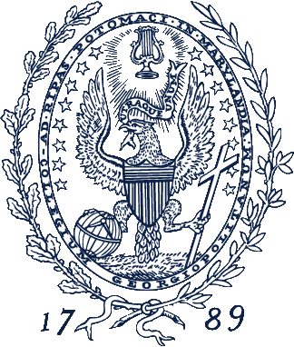
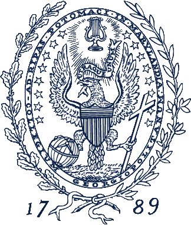

|
Coptic Scriptorium   |
CFP: Digital Coptic 2
March 12-13, 2015
Hosted by Coptic SCRIPTORIUM at Georgetown UniversityCoptic SCRIPTORIUM is pleased to host a second workshop and symposium on Digital Humanities and Coptic Studies. It will take place March 12-13, 2015 at Georgetown University in Washington, DC. This event follows on the workshop in May 2013 at Humboldt University, Berlin (http://www.copticscriptorium.org/workshop2013/workshop2013.html). The first day will be a public symposium and workshop on the state of the field; the second day will be dedicated to Coptic SCRIPTORIUM (use of the corpus and technologies, contributing to the project, future directions, possible collaborations).
For the symposium, we welcome proposals for presentations on research in Digital Coptic studies (20 minutes), project descriptions (10 minutes), and roundtables or panels on questions and emerging standards. Researchers in areas other than Coptic whose work can contribute to scholarly conversations in Digital Humanities and Coptic Studies are welcome to submit proposals, as well. Ample time will be reserved for discussion throughout the day.
There are no registration fees to attend. There may be limited travel bursaries available for presenters.
To submit a proposal, please fill out this brief form.
For questions, please contact Caroline T. Schroeder (carrie [@] carrieschroeder.com) or Amir Zeldes (amir.zeldes [@] georgetown.edu).
Coptic SCRIPTORIUM is supported by the National Endowment for the Humanities Office of Digital Humanities, the National Endowment for the Humanities Division of Preservation and Access, the University of the Pacific, and Georgetown University.
 Fork us on GitHub.
Fork us on GitHub.
Text on this page licensed under the Creative Commons Attribution 3.0 Unported License. 
The image on this page is a detail of MS M.0581, fol. 010r at the Pierpont Morgan Library, available at http://corsair.morganlibrary.org/icaimages/5/m581.010ra.jpg, for non-commercial use only.